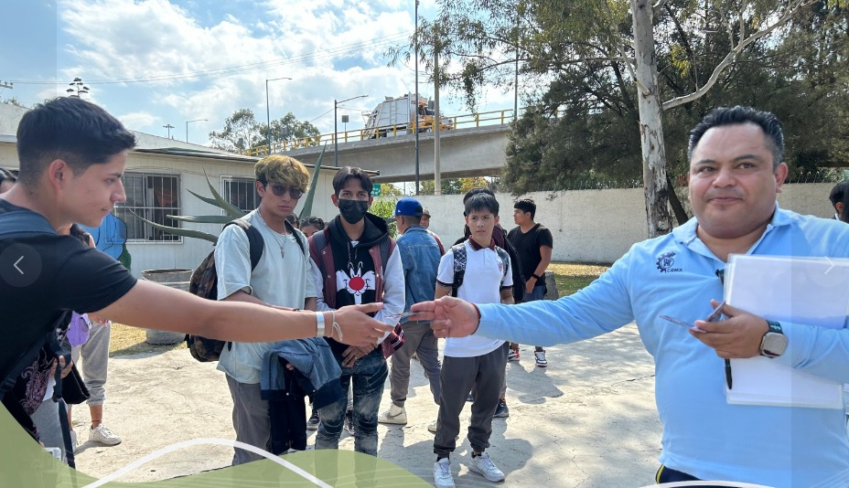
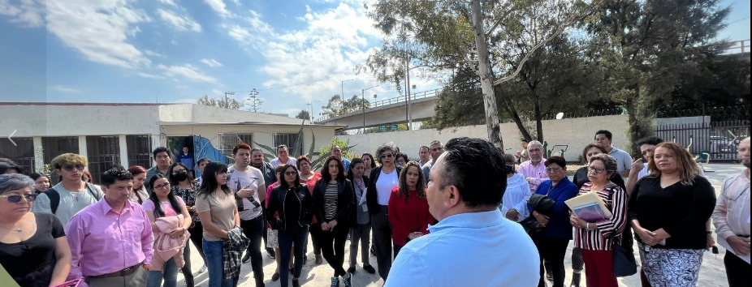
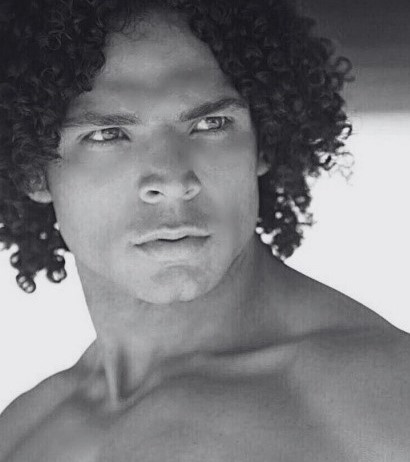
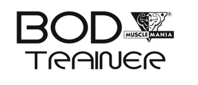
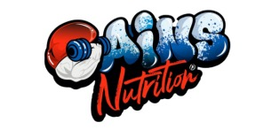

Cuando pienses en parar, corre mas rapido
El gimnasio llamado RHINO se inaugura el 3 de noviembre de 2023 con la colaboracion de toda la familia del cetis 54, con la direccion del Lic. Edgar Roa Ramirez,
Su objetivo es prevenir que los estudiantes traten enfermedades causadas por el sedentarismo,
estres, sobrepeso, etc.
y mantenerse activos fisica y mentalmente

Perfil del Coach

Julian Zambrano
Lic. en Turismo y Nutricion
Este es el coach que estara impartiendo rutinas y ayuda con el mundo fitness del gimnasio
ah participado en numerosos concursos dedicados al mundo fitness
Es CEO de "Body Trainer Arboledas", un gimnasio profesional donde entrenan atletas reconocidos, Gimnasio sede donde se imparten cursos y certificaciones, quien gano el reconocimiento como "GYM favorito en the Fit Awards 2023"

Tambien es CEO de "GAINS NUTRITION"
Una marca de Suplementos de alta calidad

Puedes encontrar estos servicios:
Tenemos varios planes de:
rutinas, dietas y una explicacion sobre ejercicios que se pueden hacer sin la necesidad de los aparatos,
junto con videos que demuestran como poder usar las maquinas que se encuentran en la parte interior del gimnasio.
puedes ingresar a ellos por medio de la cabecera de la pagina o bien por este menu de imagenes.